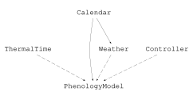

Weather-driven Phenology
This tutorial develops a thermal-time model from an equation, connects it to daily weather, and stops the simulation at maturity. It introduces the pattern used by larger crop models: process components are written independently, then composed with environment and controller systems.
The model
For daily mean temperature $T$, base temperature $T_b$, and optimum temperature $T_{opt}$, define effective temperature and accumulated thermal time as
\[\Delta T = \max(\min(T, T_{opt}) - T_b, 0), \qquad TT_{i+1} = TT_i + \Delta T_i \Delta t.\]
The crop is mature when $TT$ reaches its requirement.
Prepare weather data
The example is self-contained. A real analysis would normally read the same columns from a CSV file. The Beltsville, Maryland 2002 weather.csv used by the original tutorial remains available as a larger unit-annotated sample.
using Cropbox
using DataFrames
using Dates
dates = Date(2025, 4, 1):Day(1):Date(2025, 4, 20)
weather = DataFrame(
date = collect(dates),
Tavg = [10, 11, 12, 14, 15, 16, 17, 16, 15, 14,
13, 12, 14, 16, 18, 19, 17, 15, 13, 12],
)| Row | date | Tavg |
|---|---|---|
| Date | Int64 | |
| 1 | 2025-04-01 | 10 |
| 2 | 2025-04-02 | 11 |
| 3 | 2025-04-03 | 12 |
| 4 | 2025-04-04 | 14 |
| 5 | 2025-04-05 | 15 |
| 6 | 2025-04-06 | 16 |
| 7 | 2025-04-07 | 17 |
| 8 | 2025-04-08 | 16 |
| 9 | 2025-04-09 | 15 |
| 10 | 2025-04-10 | 14 |
| 11 | 2025-04-11 | 13 |
| 12 | 2025-04-12 | 12 |
| 13 | 2025-04-13 | 14 |
| 14 | 2025-04-14 | 16 |
| 15 | 2025-04-15 | 18 |
| 16 | 2025-04-16 | 19 |
| 17 | 2025-04-17 | 17 |
| 18 | 2025-04-18 | 15 |
| 19 | 2025-04-19 | 13 |
| 20 | 2025-04-20 | 12 |
Keep units at the model boundary. Here the table contains plain numbers and the drive declaration supplies degrees Celsius.
Declare the weather component
@system Weather begin
calendar(context) ~ ::Calendar
date(calendar.date) ~ track::date
data ~ provide(parameter, index = :date, init = date)
T: temperature ~ drive(from = data, by = :Tavg, u"°C")
endMain.Weatherprovide stores an indexed table. drive reads the row corresponding to the current calendar date. The model equations depend on T, not on DataFrame operations.
Declare thermal time
@system ThermalTime begin
Tb: base_temperature => 5 ~ preserve(parameter, u"°C")
Topt: optimum_temperature => 30 ~ preserve(parameter, u"°C")
requirement => 75 ~ preserve(parameter, u"K*d")
Tbounded(T, Topt) => T ~ track(max = Topt, u"°C")
ΔT(Tbounded, Tb): effective_temperature => Tbounded - Tb ~ track(min = 0, u"K")
TT(ΔT): thermal_time ~ accumulate(u"K*d")
mature(TT, requirement) => TT >= requirement ~ flag
endMain.ThermalTimeThe max = Topt tag caps the stored temperature and min = 0 implements the lower bound of effective temperature. The equation therefore contains no hidden clamping function. accumulate combines effective temperature with the daily clock step and stores kelvin-days.
Compose the executable model
@system PhenologyModel(ThermalTime, Weather, Controller)Main.PhenologyModelCropbox.hierarchy shows how the reusable process, environment, controller, and child systems are assembled:
h = Cropbox.hierarchy(PhenologyModel; skipcontext = true)
println(repr(MIME("text/plain"), h))
nothing{PhenologyModel, ThermalTime, Weather, Calendar, Controller}
Direct writeimage output from hierarchy(PhenologyModel; skipcontext = true). Dashed arrows identify mixins; solid arrows identify child-system relationships. The runtime context is omitted while the Calendar used by Weather remains visible.
The final system contains the process, environment, and root controller. The same ThermalTime component can be reused with another weather implementation.
Configure the scenario
config = @config (
Clock => :step => 1u"d",
Calendar => :init => ZonedDateTime(2025, 4, 1, tz"UTC"),
Weather => :data => weather,
)Config for 3 systems:
| Clock | ||
| step | = | 24 hr |
| Calendar | ||
| init | = | ZonedDateTime(2025, 4, 1, tz"UTC") |
| Weather | ||
| data | = | 20×2 DataFrame… |
Run to maturity
result = simulate(PhenologyModel;
config,
stop = :mature,
index = :date,
target = [:T, :ΔT, :TT, :mature],
)| Row | date | T | ΔT | TT | mature |
|---|---|---|---|---|---|
| Date | Quantity… | Quantity… | Quantity… | Bool | |
| 1 | 2025-04-01 | 10.0 °C | 5.0 K | 0.0 d K | false |
| 2 | 2025-04-02 | 11.0 °C | 6.0 K | 5.0 d K | false |
| 3 | 2025-04-03 | 12.0 °C | 7.0 K | 11.0 d K | false |
| 4 | 2025-04-04 | 14.0 °C | 9.0 K | 18.0 d K | false |
| 5 | 2025-04-05 | 15.0 °C | 10.0 K | 27.0 d K | false |
| 6 | 2025-04-06 | 16.0 °C | 11.0 K | 37.0 d K | false |
| 7 | 2025-04-07 | 17.0 °C | 12.0 K | 48.0 d K | false |
| 8 | 2025-04-08 | 16.0 °C | 11.0 K | 60.0 d K | false |
| 9 | 2025-04-09 | 15.0 °C | 10.0 K | 71.0 d K | false |
| 10 | 2025-04-10 | 14.0 °C | 9.0 K | 81.0 d K | true |
Inspect the last row rather than assuming maturity occurs exactly on the requirement. A discrete daily model normally crosses the threshold.
result[end, [:date, :TT, :mature]]| Row | date | TT | mature |
|---|---|---|---|
| Date | Quantity… | Bool | |
| 10 | 2025-04-10 | 81.0 d K | true |
Plot temperature and thermal time
visualize(result, :date, :TT; kind = :line)Plot variables with incompatible dimensions in separate panels. A shared axis for temperature and thermal time would be visually convenient but physically misleading.
Compare base temperatures
configs = @config config + !(ThermalTime => :Tb => [0, 5, 10])
comparison = simulate(PhenologyModel;
configs,
stop = :mature,
index = :date,
target = [:TT, :mature],
meta = :ThermalTime,
)| Row | date | TT | mature | Tb |
|---|---|---|---|---|
| Date | Quantity… | Bool | Quantity… | |
| 1 | 2025-04-01 | 0.0 d K | false | 0 °C |
| 2 | 2025-04-02 | 10.0 d K | false | 0 °C |
| 3 | 2025-04-03 | 21.0 d K | false | 0 °C |
| 4 | 2025-04-04 | 33.0 d K | false | 0 °C |
| 5 | 2025-04-05 | 47.0 d K | false | 0 °C |
| 6 | 2025-04-06 | 62.0 d K | false | 0 °C |
| 7 | 2025-04-07 | 78.0 d K | true | 0 °C |
| 8 | 2025-04-01 | 0.0 d K | false | 5 °C |
| 9 | 2025-04-02 | 5.0 d K | false | 5 °C |
| 10 | 2025-04-03 | 11.0 d K | false | 5 °C |
| 11 | 2025-04-04 | 18.0 d K | false | 5 °C |
| 12 | 2025-04-05 | 27.0 d K | false | 5 °C |
| 13 | 2025-04-06 | 37.0 d K | false | 5 °C |
| 14 | 2025-04-07 | 48.0 d K | false | 5 °C |
| 15 | 2025-04-08 | 60.0 d K | false | 5 °C |
| 16 | 2025-04-09 | 71.0 d K | false | 5 °C |
| 17 | 2025-04-10 | 81.0 d K | true | 5 °C |
| 18 | 2025-04-01 | 0.0 d K | false | 10 °C |
| 19 | 2025-04-02 | 0.0 d K | false | 10 °C |
| 20 | 2025-04-03 | 1.0 d K | false | 10 °C |
| 21 | 2025-04-04 | 3.0 d K | false | 10 °C |
| 22 | 2025-04-05 | 7.0 d K | false | 10 °C |
| 23 | 2025-04-06 | 12.0 d K | false | 10 °C |
| 24 | 2025-04-07 | 18.0 d K | false | 10 °C |
| 25 | 2025-04-08 | 25.0 d K | false | 10 °C |
| 26 | 2025-04-09 | 31.0 d K | false | 10 °C |
| 27 | 2025-04-10 | 36.0 d K | false | 10 °C |
| 28 | 2025-04-11 | 40.0 d K | false | 10 °C |
| 29 | 2025-04-12 | 43.0 d K | false | 10 °C |
| 30 | 2025-04-13 | 45.0 d K | false | 10 °C |
| 31 | 2025-04-14 | 49.0 d K | false | 10 °C |
| 32 | 2025-04-15 | 55.0 d K | false | 10 °C |
| 33 | 2025-04-16 | 63.0 d K | false | 10 °C |
| 34 | 2025-04-17 | 72.0 d K | false | 10 °C |
| 35 | 2025-04-18 | 79.0 d K | true | 10 °C |
Each configuration creates a fresh model. The metadata column records the base temperature used in each run.
Replace synthetic data
For a CSV file with date and Tavg columns:
using CSV, DataFrames
weather = CSV.read("weather.csv", DataFrame)
weather.date = Date.(weather.date)
config = @config config + (Weather => :data => weather)Before simulation, verify that dates are ordered, unique, and cover the entire requested period. provide cannot invent missing weather observations.
Extend the model
Useful next exercises are:
- add optimum and ceiling temperatures with a beta response;
- replace
maturewith several stage flags; - use
remember(when=mature)to capture the maturity date; - compare simulated dates with observations using
evaluate; - calibrate
Tbandrequirementon training years, then evaluate held-out years.
The Evaluate and Calibrate Models workflow covers the last two steps.